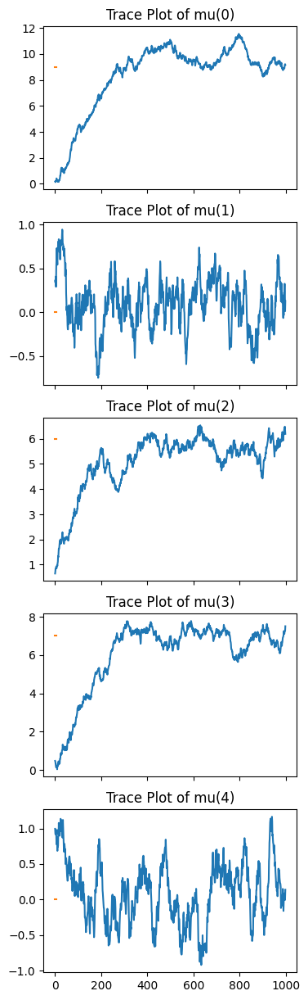
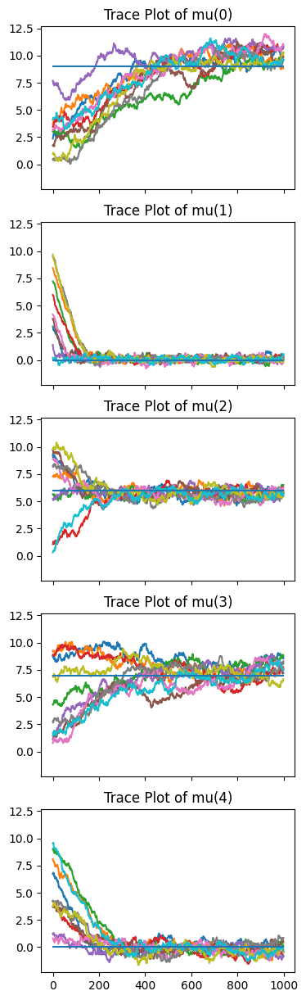

Continuous MH Sampler
[1]:
%matplotlib inline
import numpy as np
import matplotlib.pyplot as plt
from scipy.stats import norm
Model: N - Dimensional Normal distribution with Unknown Mean
Here, we assume our \((N\times1)\) vectors are independent and normally distributed. The variances are known, while the means are not. Thus, the prior and posterior are over the mean. We attempt to sample from our posterior using the simple Metropolis Hastings algorithm.
First, we produce our data:
[2]:
np.random.seed(np.random.randint(2**32))
D = int(5)
mu_0 = np.array(np.random.randint(10,size=D).astype(float))
var_0 = np.array(np.random.randint(low=1,high=5,size=D).astype(float))
data = np.random.multivariate_normal(mean = mu_0, cov = np.diag(var_0), size = 20)
mu_sample = data.mean(axis=0)
var_sample = data.var(axis=0)
print(f'Data shape: {data.shape}\nData mean: {mu_sample}\nData variance: {var_sample}')
Data shape: (20, 5)
Data mean: [ 9.81253238 0.09244845 5.69855695 7.43668199 -0.11985886]
Data variance: [2.41686305 1.65862937 2.45519072 4.35506549 2.74870522]
[14]:
class MultivariateNormal:
def __init__(self,data,var_0): #shape of data is (N,D) with N samples of D-dimensional vectors
self.data = data
self.var_0 = var_0
self.mu_sample = self.data.mean(axis=0)
self.var_sample = self.data.var(axis=0)
def logpdf(self, x):
return (norm(x['mu_trial'],self.var_0).logpdf(self.data)).sum()
Instantiating the model:
[16]:
NGauss = MultivariateNormal(data,var_0)
print(NGauss.mu_sample)
print(NGauss.var_sample)
print(NGauss.data.shape)
[ 9.81253238 0.09244845 5.69855695 7.43668199 -0.11985886]
[2.41686305 1.65862937 2.45519072 4.35506549 2.74870522]
(20, 5)
Trial
[23]:
from quicksampler import MHSampler
initial_position = {'mu_trial': np.random.rand(D)} # starting point of the MH sampler
problem = MHSampler(NGauss, initial_position, step_size=0.1)
result = problem.run(1000)
import pandas as pd
posterior = result
Getting 1000 using Metropolis Hastings
100%|█████████████████████████████████████| 1000/1000 [00:00<00:00, 1025.61it/s]
Sampling finished with an acceptance rate of 75.08
[28]:
posterior = np.array(result['mu_trial'])
print(posterior.shape)
(1000, 5)
[29]:
# single run
figure, axes = plt.subplots(D, sharex = True, figsize = (4,D*3))
for i in range(D):
axes[i].plot(posterior[:,i])
axes[i].plot(mu_0[i]*np.ones(posterior[0].shape[0]))
axes[i].set_title(f'Trace Plot of mu({i})')

[34]:
# Multiple runs
# from bayesian_inference import MHSampler
initial_guesses = 10*np.random.rand(10,D)
posteriors = []
for i in range(10):
initial_position = {'mu_trial': initial_guesses[i,:]} # starting point of the NUTS sampler
problem = MHSampler(NGauss, initial_position, step_size=0.1)
result = problem.run(1000)
posteriors.append(np.array(result['mu_trial']))
figure, axes = plt.subplots(D, sharex = True, sharey = True, figsize = (4,D*3))
for i in range(D):
for j in range(10):
axes[i].plot(posteriors[j][:,i])
axes[i].plot(mu_0[i]*np.ones(posteriors[0].shape[0]))
axes[i].set_title(f'Trace Plot of mu({i})')
Getting 1000 using Metropolis Hastings
100%|█████████████████████████████████████| 1000/1000 [00:00<00:00, 1059.97it/s]
Sampling finished with an acceptance rate of 74.68
Getting 1000 using Metropolis Hastings
100%|█████████████████████████████████████| 1000/1000 [00:00<00:00, 1095.65it/s]
Sampling finished with an acceptance rate of 75.02
Getting 1000 using Metropolis Hastings
100%|█████████████████████████████████████| 1000/1000 [00:00<00:00, 1057.01it/s]
Sampling finished with an acceptance rate of 72.41
Getting 1000 using Metropolis Hastings
100%|█████████████████████████████████████| 1000/1000 [00:00<00:00, 1083.97it/s]
Sampling finished with an acceptance rate of 75.13
Getting 1000 using Metropolis Hastings
100%|█████████████████████████████████████| 1000/1000 [00:00<00:00, 1165.75it/s]
Sampling finished with an acceptance rate of 80.26
Getting 1000 using Metropolis Hastings
100%|█████████████████████████████████████| 1000/1000 [00:00<00:00, 1078.99it/s]
Sampling finished with an acceptance rate of 74.07
Getting 1000 using Metropolis Hastings
100%|█████████████████████████████████████| 1000/1000 [00:00<00:00, 1096.86it/s]
Sampling finished with an acceptance rate of 75.19
Getting 1000 using Metropolis Hastings
100%|█████████████████████████████████████| 1000/1000 [00:00<00:00, 1114.99it/s]
Sampling finished with an acceptance rate of 75.53
Getting 1000 using Metropolis Hastings
100%|█████████████████████████████████████| 1000/1000 [00:00<00:00, 1079.35it/s]
Sampling finished with an acceptance rate of 74.52
Getting 1000 using Metropolis Hastings
100%|█████████████████████████████████████| 1000/1000 [00:00<00:00, 1121.45it/s]
Sampling finished with an acceptance rate of 76.22

[ ]: